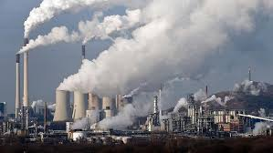

What Went Wrong ?
Most climate scientists agree the main cause of the current global warming trend is human expansion of the greenhouse effect warming that results when the atmosphere traps heat radiating from Earth toward space.Certain gases in the atmosphere block heat from escaping. Long-lived gases that remain semi-permanently in the atmosphere and do not respond physically or chemically to changes in temperature are described as forcing climate change. Gases, such as water vapor, which respond physically or chemically to changes in temperature are seen as feedbacks.
Gases that contribute to the greenhouse effect include:
Water Vapor
The most abundant greenhouse gas, but importantly, it acts as a feedback to the climate. Water vapor increases as the Earth's atmosphere warms, but so does the possibility of clouds and precipitation, making these some of the most important feedback mechanisms to the greenhouse effect.
Carbon Dioxide (CO2)
A minor but very important component of the atmosphere, carbon dioxide is released through natural processes such as respiration and volcano eruptions and through human activities such as deforestation, land use changes, and burning fossil fuels. Humans have increased atmospheric CO2 concentration by a third since the Industrial Revolution began. This is the most important long-lived "forcing" of climate change.
Methane
A hydrocarbon gas produced both through natural sources and human activities, including the decomposition of wastes in landfills, agriculture, and especially rice cultivation, as well as ruminant digestion and manure management associated with domestic livestock. On a molecule-for-molecule basis, methane is a far more active greenhouse gas than carbon dioxide, but also one which is much less abundant in the atmosphere.
Nitrous Oxide
A powerful greenhouse gas produced by soil cultivation practices, especially the use of commercial and organic fertilizers, fossil fuel combustion, nitric acid production, and biomass burning. Chlorofluorocarbons (CFCs). Synthetic compounds of entirely of industrial origin used in a number of applications, but now largely regulated in production and release to the atmosphere by international agreement for their ability to contribute to destruction of the ozone layer. They are also greenhouse gases.
In its recently released Fourth Assessment Report, the Intergovernmental Panel on Climate Change, a group of 1,300 independent scientific experts from countries all over the world under the auspices of the United Nations, concluded there's a more than 90 percent probability that human activities over the past 250 years have warmed our planet.
